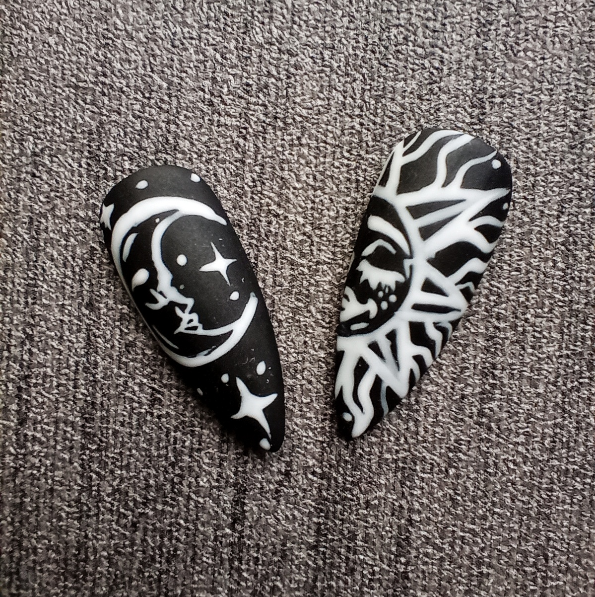

Qué son las uñas press on?
Las llaman “uñas press on”, así que estate pendiente de su nombre si tras leer esto te entran unas ganas locas de unas y las lees así. Porque si algo hemos hecho ha sido probarlas para poder hablar con propiedad (y engancharnos a ellas). Y si estás pensando en que vamos a contarte cómo ponerte la clásica manicura francesa tan cuadrada y fake que da grima o una manicura francesa decorada muy llamativa y adherida con pegamento, estás equivocada. El universo de las uñas press on se amplía y da lugar a un mundo casi infinito de posibilidades.
Lucir una manicura de tendencia ya no requerirá más de media hora, porque son tan fáciles de poner que no se le resisten ni a la más torpe de la clase. Otra de las cosas por las que nos gustan, además de su facilidad de aplicación que más tarde te explicaremos, es la cantidad de diseños disponibles y su amplio rango de precios. También low cost. Hay varias formas de colocar las uñas postizas o press on. El término press on hace referencia, precisamente, a la clave de su colocación, que consiste en una ligera presión, sea cual sea el material de adhesión, sin que se genere aire entre la uña postiza y la uña natural para lograr una mejor adherencia. Uñas postizas con pegamento
Para pegarlas, suele usarse pegamento de uñas. Eso sí, hay que tener precaución con los acrilatos presentes en el pegamento de uñas por su riesgo de dermatitis. El pegamento de uñas tiene muchos nombres, desde pegamento, a ‘nail glue’ o resina adhesiva, dependiendo del país. Pero todos hacen referencia a una solución viscosa que puede presentarse con o sin pincel (similar a un esmalte transparente), para colocar sobre la uña natural y poner después el 'tip' (o uña postiza).
